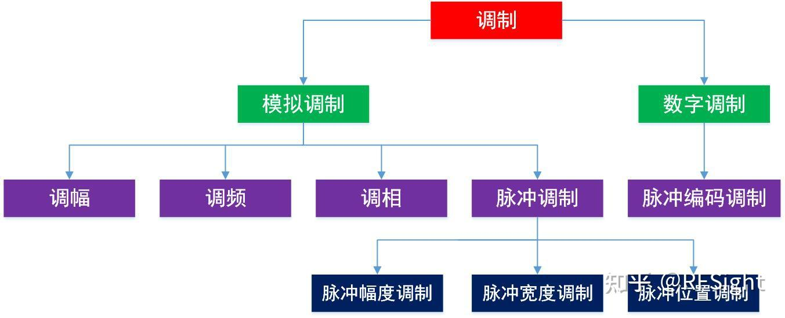
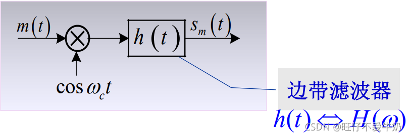
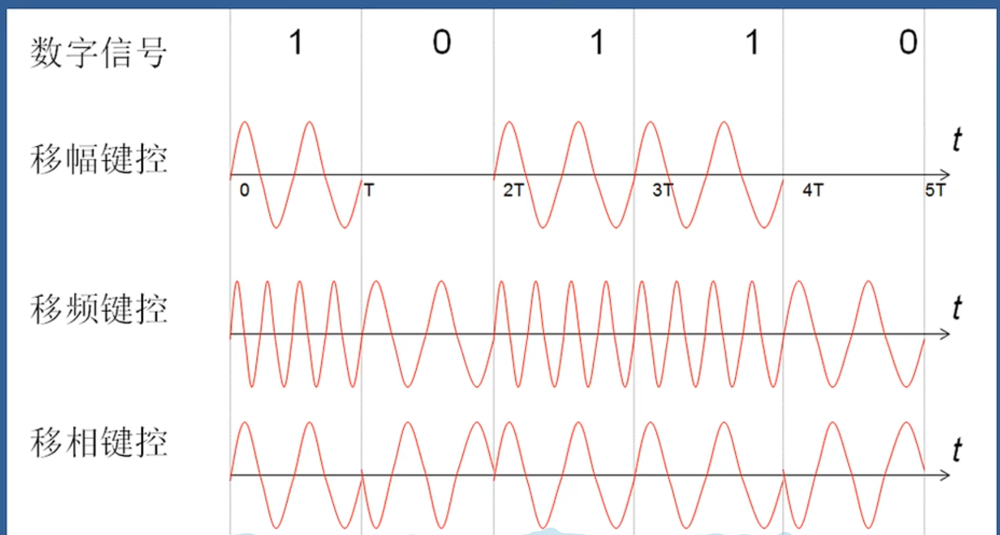
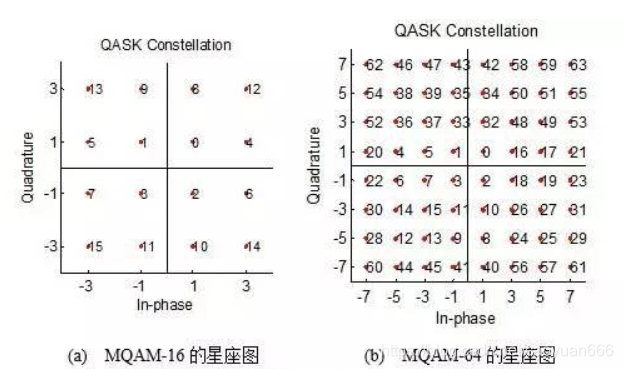

调制与解调
1.基本概念
调制时将基带信号搬移到高频载波，实现频谱搬移的过程。解调则是调制的逆过程。
1.1 为什么要进行调制：
a.高频信号更容易收发传输，天线尺寸需要是波长的1/4，使用高频信号可以减小天线尺寸;
b.无线频谱资源有限，需要在指定的频率上进行发射接收，调制实现频率复用
c.增加信号在信道中传输时的抗干扰性能，提高频率效率
1.2 调制中包含哪些信号类型
a.消息信号
b.载波信号
c.调制信号
2.调制的类型

模拟调制：指模拟消息信号直接调制在载波上，让载波的特性跟随其幅度进行变化。包括调幅（AM）、调相（PM）、调频（FM）、模拟脉冲调制（后面会讲）
数字调制：指调制信号或者消息信号已经不在是模拟形式，而是进行了模数转换，将数字基带信号调制到载波上进行传输，它的优点有高抗噪性、高可用带宽和容许功率。
数字调控由三种基本的方式：幅移键控(ASK)、频移键控(FSK)和相移键控(PSK)。它们分别对应于用载波（正弦波）的幅度、频率和相位来传递数字基带信号。（后面会仔细讲）
3.解调的类型
相干解调与非相干解调。相干解调（也被称为同步检波）适用于所有线性调制信号的解调。
4.模拟调制与解调
参考：https://blog.csdn.net/weixin_50493296/article/details/121048869
4.1 幅度调制（线性调制）的原理

Sm(t) = [m(t)cos ωct] * h(t)
$\mathrm{S}_{\mathrm{m}}(\omega)=\frac{1}{2}\left[\mathrm{M}(\omega+\omega_{\mathrm{c}})+\mathrm{M}(\omega-\omega_{\mathrm{c}})\right]\mathrm{H}(\omega)$
4.1.1 常规 调幅（AM）
4.1.2 双边带调制（DSB-SC）
4.1.3 单边带调制（SSB）
4.1.4 残留边带调制（VSB）
4.1.5 相干解调与包络检波
4.2 非线性调制（角度调制）原理
角度调制时FM和PM的总称，载波的幅度恒定，而频率或相位受调制，抗噪声性能优于幅度调制
4.2.1 宽带 调频
4.3 模拟脉冲调制
5.数字调制

5.1 ASK （幅移键控法）
载波幅度是随着调制信号而变化的，分为2ASK（2进制调制）,MASK（多进制数字调制法）
5.2 PSK（相移键控法）
根据数字基带信号的两个电平使载波相位在两个不同的数值之间切换的一种相位调制方法。
产生PSK信号的两种方法：
调相法：将基带数字信号（双极性）与载波信号直接相乘的方法：
选择法：用数字基带信号去对相位相差180度的两个载波进行选择。两个载波相位通常相差180度，此时称为反向键控（PSK）。
5.3 FSK（频移键控法）
载波信号的频率根据离散数字变化而变化，FSK 调制波的输出对于二进制高电平输入频率较高，对于二进制低电平输入频率较低。
5.4 QAM（正交幅度调制法）
利用正交载波对两路信号分别进行双边带抑制载波调幅形成的。通常有二进制 QAM，四进制QAM（16QAM），八进制QAM（64QAM）等。
